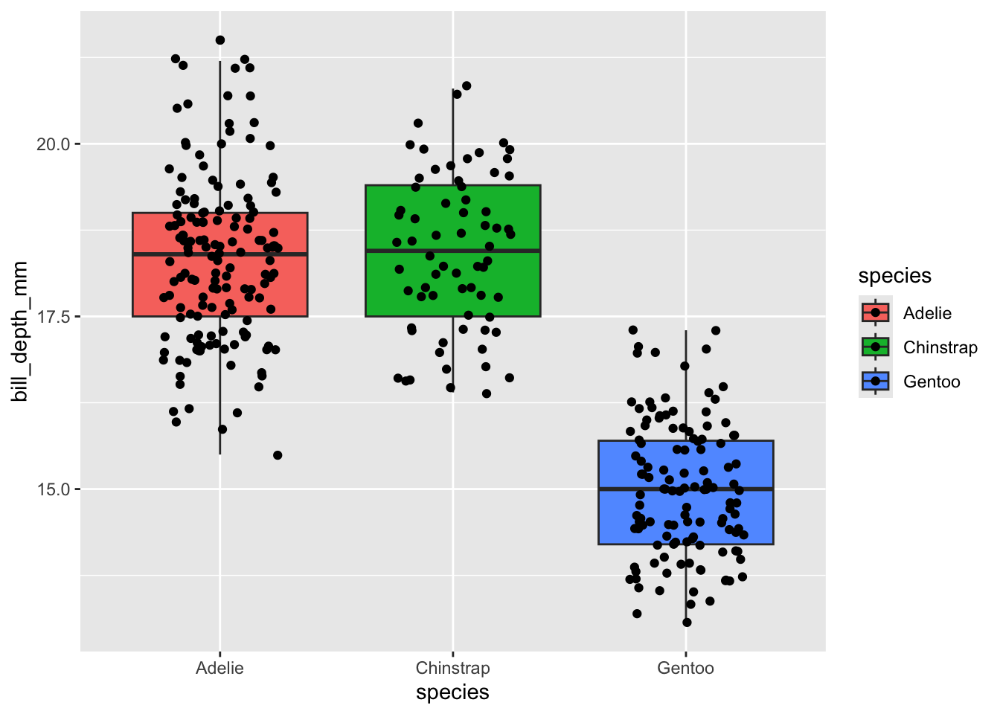
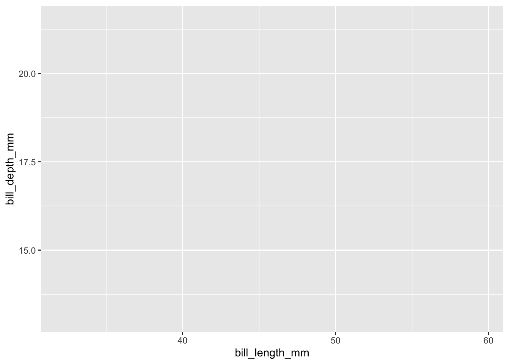
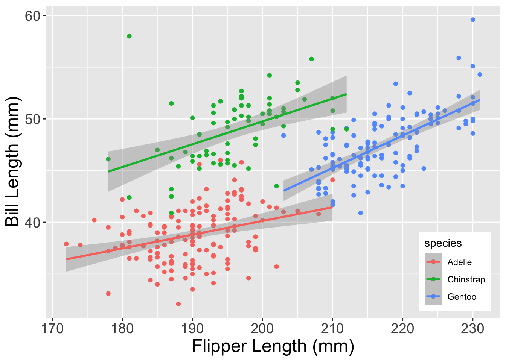
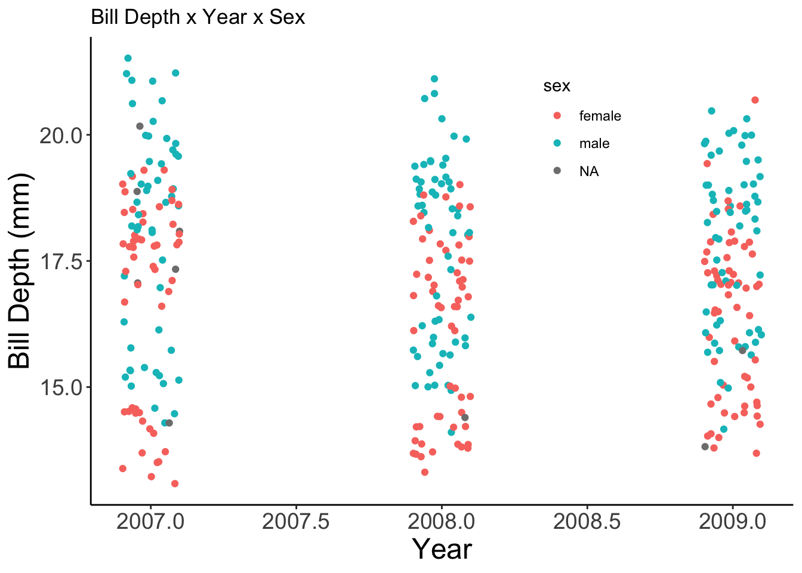
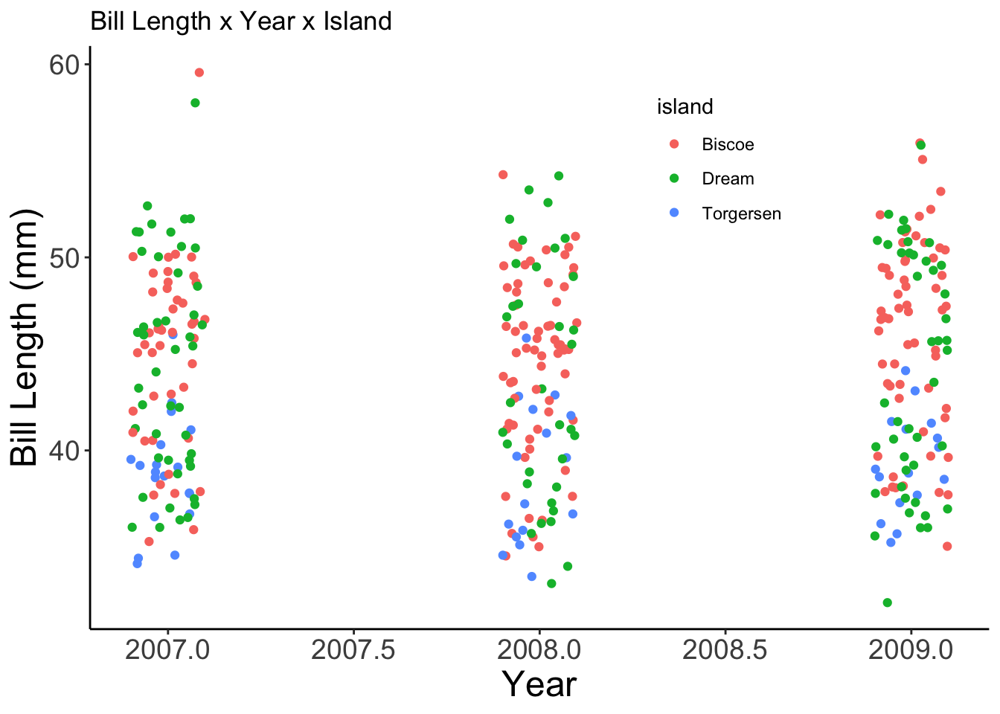
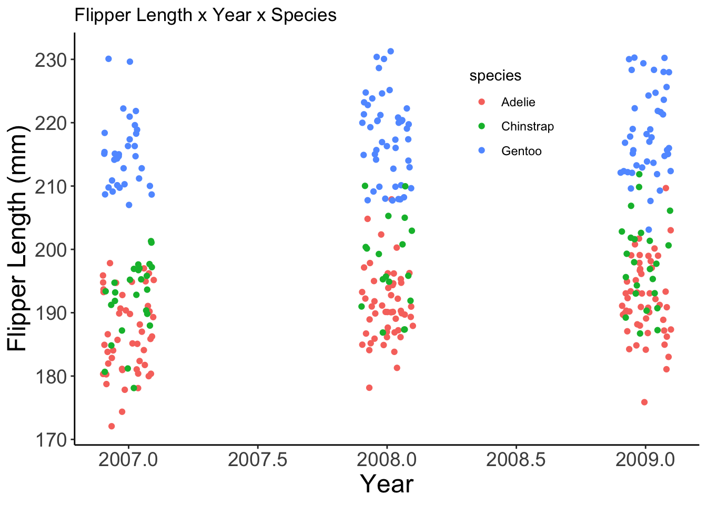

ggplot(data = penguins, mapping = aes(x = year, y = body_mass_g))Visualize
Module Learning Objectives
By the end of this module, you will be able to:
- Create a baseline plot with
ggplot2’sggplotfunction along with theaeshelper function. - Add desired geometries to your baseline plot with the
geom_...family of functions - Explain the advantage of using the
+operator to add together multiple plot elements - Use
ggplot2’slabsandscale_fill_manualhelper functions to customize your plot’s labels and colors - Differentiate
aes’fillandcolorarguments - Generate separate plots based on grouping variable(s) with
ggplot2’sfacet_gridfunction - Design a custom format for your plots using
ggplot2’sthemefunction
ggplot2 Overview
While the bulk of the Tidyverse is focused on modifying a given data object, ggplot2 is also a package in the Tidyverse that is more concerned with–intuitively enough–plotting tidy data. ggplot2 does share some syntax with the functions and packages that we’ve discussed so far but it also introduces some new elements that we’ll discuss as we encounter them.
Creating a Plot
To create the foundation for your plot, we’ll use the ggplot function (note that the package is ggplot2 while the function name lacks the “2”). This function allows you to globally define the data object you’re using as well as which variable(s) should be mapped to x and y axes as well as aesthetic parameters–for example, which groups outline or fill color should be inherited from, etc. The ggplot function relies on an aesthetics helper function named aes. We’ll give ggplot the data name and aes, while we’ll pass all relevant variables to aes directly. This may be easier to follow once we’ve covered an example so let’s do that now!
Example
Just like the preceding chapters, let’s use the penguins dataset to demonstrate this plot. Let’s create the foundation of a graph that has year on the y-axis and body_mass_g in the x-axis.
The ggplot function wants both a data and mapping argument that we’ll specify here for clarity but will exclude going forward. mapping expects the aes function that in turn defines all your variable placements.
It may not look like it, but this was successful! The ggplot function creates the first “layer” of the plot including raw axis titles and tick marks but when creating a plot with the ggplot2 package, choosing which plot type is actually done with a separate class of functions called “geometries”.
Choosing a Plot Type
Now that we have a baseline plot, we can add desired geometries using the geom_... family of functions. Broadly speaking, there is one geom_... for every possible way of plotting your data. Want to make a scatter plot? Use geom_point. Bar plot? geom_bar. Add a best-fit line? geom_smooth. When you first begin making plots with ggplot2 you will likely have to Google which geom_... you want (that was certainly what the creators of this workshop did when we started out!) but over time you’ll remember them more and more clearly.
Geometry Aside No. 1 - Adding Plot Elements
You may have noticed that the core plot is built with ggplot and aes but each subsequent component is added with one of the geom_... functions and realized the gap we haven’t talked about yet: how do we combine these separate lines of code? The answer is part of what makes ggplot different from the rest of the Tidyverse. In the rest of the Tidyverse we chain together multiple lines of code with the %>% operator, however, in ggplot2 we use + to combine separate lines of code.
This has a distinct advantage that we’ll discuss later but we’ll use the + in the following example to show its use.
geom_... Example: Adding a Geometry
Example
Let’s re-create our year by body_mass_g plot but let’s make it a scatter plot by adding geom_point.
ggplot(data = penguins, mapping = aes(x = year, y = body_mass_g)) +
geom_point()Because aes gets all of the variable mapping information, we don’t need to give anything to geom_point! This makes adding multiple geometries much easier than if we had to re-specify the variables separately in every geometry!
geom_... Example: Adding Multiple Geometries
Example
Let’s add a best-fit line to this graph to demonstrate how multiple geometries are added.
ggplot(data = penguins, mapping = aes(x = year, y = body_mass_g)) +
geom_point() +
geom_smooth()Not a terribly informative graph but the code aptly demonstrates how several geometries can be layered.
Geomtery Aside No. 2 - Order Matters
The heading says it all: order matters! The order that you add geom_...s to your plot (using +) determines which geometries are “above” or “in front of” others. This is a desirable behavior for plots with multiple geometries but is something to keep in mind! Let’s cover an example to clarify this.
geom_... Example: Order
Example
Let’s say we want to make a ggplot of bill depth within each penguin species and we want both a boxplot and the points that make up the boxplot. This involves using both the geom_point and geom_boxplot geometries but order will be crucial! To demonstrate our point better, we’ll also add a new argument to our aes: fill. fill defines which variable should be used to fill in open spaces (like bar or box plots). Let’s create our plot!
ggplot(penguins, aes(x = species, y = bill_depth_mm, fill = species)) +
geom_point() +
geom_boxplot()Our plot has all the right elements, but the box plots are covering up the points between the ends of the box (the 25th and 75th quartiles). If we change the geometry order we’ll get our points “in front of” the box plots.
ggplot(penguins, aes(x = species, y = bill_depth_mm, fill = species)) +
geom_boxplot() +
geom_point()Now our points can be seen even when they overlap with the box plot. Note that the order of geometries doesn’t affect any overlap in either the x or y axis. In our above plot you’ll see that our points are so densely stacked that it is difficult to see the whiskers’ extent. We must change geometries in order to fix overlap issues like this. Fortunately, we can use geom_jitter instead of geom_point to make a scatter plot where all points are jittered in the x-axis to make them easier to see.
ggplot(penguins, aes(x = species, y = bill_depth_mm, fill = species)) +
geom_boxplot() +
# The width argument lets us specify how far apart (in the x-axis) we want points to jitter
geom_jitter(width = 0.25)
Great! Now we can see both the points and the box plots because we’ve achieved (1) the order of geometries and (2) the type of geometries that we need in this case.
Challenge: Geometries
Your Turn!
Using ggplot2, create a scatter plot of bill_depth_mm against body_mass_g.
Advantage of the +
When we first introduced the + for adding together multiple plot elements we said that it had a key advantage but were vague about what exactly that benefit was. The + allows you to build plots stepwise by adding elements to an object. This can be extremely useful when you’re experimenting with a plot as you could make several different objects, each with increasingly more plot elements, and allow all of them to inherit the same fundamental architecture.
For users who are writing their own functions, the + allows you to build plots using conditions specified by arguments. Say you want to write a function that always makes the same type of ggplot but you want to allow users to choose whether a best-fit line is added. Because of the + you can do exactly this!
Let’s cover a quick example of the value of stepwise plot creation.
Stepwise Plot Addition Example
Example
Let’s create a plot of bill length against bill depth and color the points by penguin species. First, we create the foundation of our plot without any geometries and assign it to an object using the <- operator.
plot_v1 <- ggplot(penguins, aes(x = bill_length_mm, y = bill_depth_mm, color = species))
plot_v1
Now let’s add points to this blank plot using geom_point (in this case we do not want geom_jitter because it changes the x-position of points).
plot_v2 <- plot_v1 +
geom_point()
plot_v2
Now we can further add a linear regression line (geom_smooth(method = "lm")) for each species’ bill depth vs. length relationship. Because we colored by species earlier, geom_smooth will automatically create separate regression lines! Pretty cool, right?
plot_v3 <- plot_v2 +
geom_smooth(method = "lm")
plot_v3
Great! We could have added the ggplot and geom_point and geom_smooth lines together at the same time but the + allows us to build graphics step-by-step if we so desire.
Customizing Plots
There are too many helper functions included in ggplot2 to cover them all here but we can cover two that you may find particularly helpful: labs and scale_fill_manual.
Customizing - Labels
labs is ggplot2’s one-stop shop solution to customizing your axis labels and plot title. Add labs in the same way you would add a geometry to add custom axis labels to your plot. This is especially useful if your column names are highly abbreviated or otherwise difficult for those outside of your group to interpret.
labs Example: Adding Labels
Example
Let’s make a plot of the number of penguins per island per species with more informative axis labels and a plot title. We’ll need to calculate that quickly but we can leverage the tools we practiced in the “Summarize” chapter to do that.
# Count penguins
penguin_count <- penguins %>%
dplyr::group_by(species, island) %>%
dplyr::summarize(total = dplyr::n()) %>%
dplyr::ungroup()
# Take a look at that object
dplyr::glimpse(penguin_count)Rows: 5
Columns: 3
$ species <fct> Adelie, Adelie, Adelie, Chinstrap, Gentoo
$ island <fct> Biscoe, Dream, Torgersen, Dream, Biscoe
$ total <int> 44, 56, 52, 68, 124Now that we have that object, let’s make a bar plot of penguins on each island and let’s color by penguin species.
ggplot(penguin_count, aes(x = island, y = total, fill = species)) +
# `stat` argument defines whether you've already done the calculation or you want `ggplot` to try to do it itself
geom_bar(stat = 'identity') +
labs(x = "Island Name",
y = "Penguins Measured",
title = "Number Penguins Counted per Island and Species")We now have much more human-readable axis labels and an informative title! labs can also be used to add a subtitle, caption, or even alt text (alternative text is special text embedded in an image that is useful for people who require a screen reader to describe visual elements). See ?labs for more information on the other labels it controls.
Customizing - Using Custom Colors
As we’ve progressed through this training you may have noticed the classic ggplot2 default colors (the first three are a mild red, blue, and green). It is often the case however that we want to choose our own colors; this is where scale_fill_manual becomes needed.
This function is added in the same way that the geom_... and labs functions are added and requires a vector of the colors that you want to use instead of the defaults. There are two key conditions to keep in mind when specifying your colors. First, you must supply as many colors as there are groups to color by; ggplot2 will not fill in defaults if you supply too few colors and won’t guess which to drop if you give too many. Second, the order that you provide colors in must be correct OR you must “name” each color to assign it to a specific group. To “name” the color, use the following syntax: c(groupA = color1, groupB = color2, .... Order can be a simple vector but it is often nice to be explicit about which group should be which color.
Let’s return to our bar plot above and change the colors used for our bar plot.
scale_fill_manual Example: Specify Fill
Example
Let’s re-create the plot from the previous example and specify the colors manually using scale_fill_manual
# Create the plot
ggplot(penguin_count, aes(x = island, y = total, fill = species)) +
geom_bar(stat = 'identity') +
# Specify labels
labs(x = "Island Name", y = "Penguins Measured") +
# Choose colors!
scale_fill_manual(values = c("red", "orange", "yellow"))Two quick notes before we move on:
You can use “hexadecimal codes” for colors (sort of a machine-readable way of specifying colors) in this function. We find the website colorbrewer2.org particularly useful because it groups colors into palettes and includes a “colorblind safe” check box that limits your options to only those that will be accessible to all viewers. You can also download the
RColorBrewerpackage to easily incorporate its many color palettes into your visualizations!Feel free to check out NCEAS’ R color cheatsheet for more color options.
Customizing - color versus fill
One nuance of ggplot2 aesthetics that we should cover before continuing is the difference between “color” and “fill”. If used in the aes function, both of these at first glance seem to dictate what we might think of as “plot color.” In the example above, we used scale_fill_manual to specify the color of the bars in our bar plot.
Put clearly: ggplot2 defines “fill” versus “color” as follows:
fill= controls color inside of a hollow shapecolor= controls color on the outside of a hollow shape or the entire color of a solid shape- From
ggplot2’s point of view, a solid shape is essentially a shape that is all outline and both real outlines and non-hollow shapes fall undercolor’s jurisdiction
- From
Let’s make some example plots to demonstrate this distinction.
Example
Let’s make a boxplot of bill_length_mm across penguin species and set fill to species.
ggplot(penguins, aes(x = species, y = bill_length_mm,
fill = species)) +
geom_boxplot()Notice how the interior of the boxes is colored by species? Watch what happens when we make the same plot again but change fill = to color = in the aes function:
ggplot(penguins, aes(x = species, y = bill_length_mm,
color = species)) +
geom_boxplot()See how the interior of the box plots now defaults to white but the outline edges become colored by species? Let’s demonstrate this again with a solid object to show fill versus color in another context.
Let’s create a scatterplot of bill_length_mm by bill_depth_mm and color by species
ggplot(penguins, aes(x = bill_depth_mm, y = bill_length_mm,
color = species)) +
geom_point()The default point shape for a ggplot2 scatterplot is a solid dot so the points are now fully colored by species (see ?pch for other point options). What if we changed color = to fill = though?
ggplot(penguins, aes(x = bill_depth_mm, y = bill_length_mm,
fill = species)) +
geom_point()Interestingly, ggplot2 knows that you’re trying to differentiate by species so it still returns a legend but unfortunately all three species’ points defaulted to black so we can’t see the difference! If we change the points to be hollow however…
ggplot(penguins, aes(x = bill_depth_mm, y = bill_length_mm,
fill = species)) +
geom_point(shape = 21)We now get our points filled with the correct color with a black outline to each point!
If you ever try to manually specify one or the other and your plot looks the same, chances are you’re mis-specifying color for fill or vice versa. Double check that and you will often resolve the issue
Challenge: Customizing
Your Turn!
Using ggplot2, create a scatter plot of bill_depth_mm against body_mass_g and where the points are colored based on the sex of the penguin. Make female penguins’ points red and male penguins’ points blue. Also, give both axes manually-specified titles (i.e., not the raw column names!).
Separating Plots by a Variable
Sometimes it is useful to create a plot but separate out the data by one of the columns. ggplot2 includes the facet_... family of functions to accomplish this. faceting a plot creates several panels that have the same labels and data but separated by whatever variable(s) you give to the facet_... function in question.
facet_grid Example
Example
Let’s return to our multi-colored bill length vs. bill depth plot to demonstrate faceting in action. We’ll create the same plot but this time we’ll facet by island so that the penguins of each island are included in separate panes.
The syntax of facet_grid is as follows: [column for columns of plots] ~ [column for rows of plots]. If you only want rows or columns of your plot panes, replace that side of the ~ with a period.
ggplot(penguins, aes(x = bill_length_mm, y = bill_depth_mm, color = species)) +
geom_point() +
geom_smooth(method = "lm") +
# Let's also add better axis labels
labs(x = "Bill Length (mm)", y = "Bill Depth (mm)") +
# Now facet by island
facet_grid(. ~ island)Note that the values within island that make up each pane are included in the dark gray bar at the top of each pane. This behavior is automatic and makes your separated plots much more interpretable.
Challenge: facet_grid
Your Turn!
Using the plot you created for the previous challenge (bill_depth_mm vs. body_mass_g and color = sex, etc.), facet by species of penguin. Note that you can choose whether you want your plot panels stacked vertically or horizontally.
Changing Thematic Properties
In all of our preceding examples the plots have a characteristic ggplot2 “feel” where they all have gray backgrounds with white grid lines of varying thickness depending on whether they are minor or major. If color or fill is specified in aes the legend is on the right and in all plots the axis labels and tick marks are (in our opinion) a very small font size.
ggplot2 placed all of the power to modify any of these parameters into a single, comprehensive function: theme. theme allows users to specify nearly any formatting component and modify it as they desire. Just like the geom_... functions, Google will very much be your friend as you try to remind yourself about the breadth of possibility within theme but over time you will become more comfortable and confident!
Let’s cover an example to demonstrate a few components of theme.
theme Example: Manual Specification
Example
Let’s create a plot of bill length versus flipper length and colored by penguin species.
core_plot <- ggplot(penguins, aes(x = flipper_length_mm, y = bill_length_mm,
color = species)) +
geom_point() +
geom_smooth(method = "lm") +
# Let's also add better axis labels
labs(x = "Flipper Length (mm)", y = "Bill Length (mm)")
core_plot
Now that we have this plot, let’s change three things using theme: 1. Increase axis text size 2. Increase axis title text size 3. Move the legend into the bottom right of the plot
To accomplish this, we’ll add a theme to the core_plot object that we created above and specify each of those changes within that function.
core_plot +
# Add `theme` to the plot
theme(
# Tell it the X/Y coordinates of the legend
legend.position = c(0.9, 0.15),
# Now change the text size of the axis ticks and labels
axis.title = element_text(size = 18),
axis.text = element_text(size = 14) )
Note that for certain parameters, you must also specify one of the element_... family of functions. element_text governs all things related to text (i.e., size, font, etc.) while element_rect changes things related to background boxes of plot components. There are other element_... functions that you’ll encounter as you use Google and Stack Overflow (a coding help website Google will frequently identify when you search for error explanations) so rest assured that you’ll be able to find support documentation for these when you need it.
theme Example: Pre-Packaged Themes
If that all seemed pretty involved, don’t worry! ggplot2 comes with several theme_... functions that are pre-built and modify a lot of these parameters in desirable ways without necessitating you doing a deep dive into Google. For instance, theme_bw or theme_classic are both great options that we’ll demonstrate below.
Example
Let’s re-use the core_plot object we built above to quickly demonstrate theme_bw and theme_classic. You’ve likely seen the default ggplot2 theme ad nauseam at this point but let’s show it one more time for comparative purposes.
core_plotNow let’s call the same plot but add theme_bw to it.
core_plot +
theme_bw()
Not bad! Finally, let’s check out theme_classic.
core_plot +
theme_classic()Even better! If you’d like, you can use a pre-built theme and specify additional elements yourself. Let’s add the theme content we came up with in the previous example to the theme_classic plot.
core_plot +
# Add the 'classic' theme
theme_classic() +
# As before, change the legend position and axis text size
theme(legend.position = c(0.9, 0.15),
axis.title = element_text(size = 18),
axis.text = element_text(size = 14) )Now that is looking publication-quality! One quick note though: whichever theme specification is last “wins”. This means that if you have a theme call that sets font size to 14 and then add a second theme beneath it that sets font size to 30, the font size of your plot will be 30. This is part of why you can add pre-built themes and your own custom modifications together but is good to keep in mind if you’re sure your custom theme is specified correctly but isn’t showing up in your plot.
Challenge: theme
Your Turn!
Using the plot you created for the previous challenge (bill_depth_mm vs. body_mass_g and color = sex, etc.), (1) add the theme_bw pre-built theme, (2) increase the axis title size to 16, and (3) move the legend into the top left of the plot.
Combining theme and +
We discussed the strengths of ggplot2’s + operator earlier but it bears repeating here now that we’ve covered theme. An extremely helpful combination of these principles allows you to save all of your theme editing into an object and then add that object to all the different plots you make for the project! This would guarantee that all of your plots have the same format without you needing to re-write that formatting for every plot. We’ll demonstrate briefly below.
Example: theme & +
Example
Let’s begin by defining our theme that we want all plots to use. For simplicity’s sake, let’s use the theme code outlined in the previous example.
# Begin with `theme_classic` and then add on our custom modifications
my_theme <- theme_classic() +
# As before, we're moving the legend and increasing axis font size
theme(legend.position = c(0.7, 0.8),
axis.title = element_text(size = 18),
axis.text = element_text(size = 14) )Now we can make a handful of plots and add the my_theme object to each of them!
ggplot(penguins, aes(x = year, y = bill_depth_mm, color = sex)) +
geom_jitter(width = 0.1) +
labs(x = "Year", y = "Bill Depth (mm)",
title = "Bill Depth x Year x Sex") +
my_theme
ggplot(penguins, aes(x = year, y = bill_length_mm, color = island)) +
geom_jitter(width = 0.1) +
labs(x = "Year", y = "Bill Length (mm)",
title = "Bill Length x Year x Island") +
my_theme
ggplot(penguins, aes(x = year, y = flipper_length_mm, color = species)) +
geom_jitter(width = 0.1) +
labs(x = "Year", y = "Flipper Length (mm)",
title = "Flipper Length x Year x Species") +
my_theme
This can be a great way of making your figure creation process dramatically more efficient when it becomes time to shift from exploratory plots to publication-quality figures!